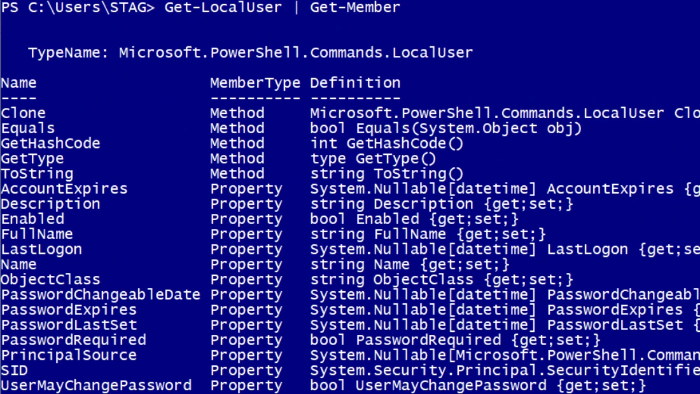
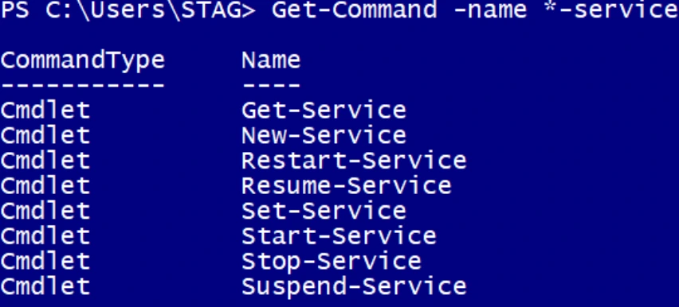
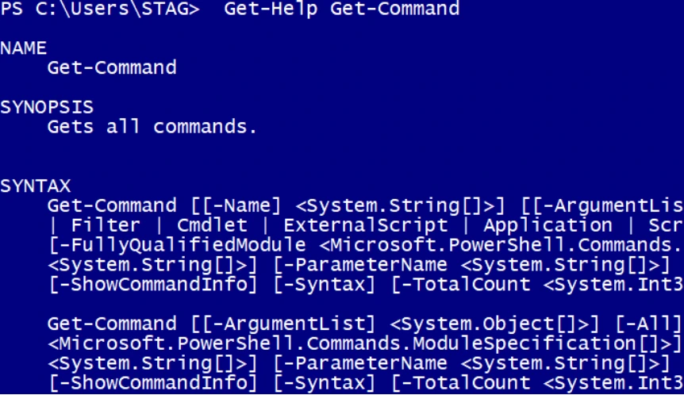

Transcription du support du Drive. Les formulations historiques et les exemples du document sont conservés. Les valeurs d’accès du laboratoire sont indiquées comme « fourni par le formateur ». Les adresses de messagerie personnelles utilisent example.com.
Démonstration 01 du module 2
L’objectif de cette démonstration est de présenter la commande Get-Member qui permet de
visualiser les informations d’un objet PowerShell.On obtient le type d’objet Paramètre TypeName.
La colonne MemberType renseigne sur les méthodes et les propriétés qui composent notre objet.
La commande Get-Member fait partie des trois commandes dites clés pour utiliser PowerShell
Get-LocalUser | Get-Member
comme langage d’administration de système. Pour rappel les commandes clés sont :
Get-Command
Get-Help
Get-Member
Une bonne connaissance de ces trois commandes est essentielle.
Get-Command -Name *-service
Get-Help Get-Command
